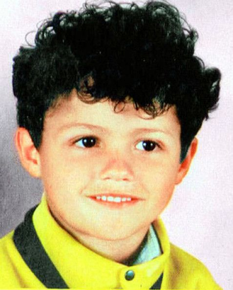

Cristiano Ronaldo was born on February 5, 1985. He was the fourth child born to his mother, Maria Dolores dos Santos Aveiro and his father, Jose Dinis Aveiro in Funchal, an island of Madeira, Portugal. His father worked as a metropolitan gardener while his mother was a cook. Ronaldo was named after then-US President Ronald Reagen. Ronaldo has an elder brother, Hugo and older sisters, Elma and Liliana. While growing up, he and all his siblings shared a room. Ronaldo was raised as a Catholic. He played for an amateur team, Andorinha, before being signed by Sporting CP for 1,500 Euros after a three-day trial. Ronaldo stopped attending school so as to focus on his football career. Prior to that decision, he was expelled after throwing a chair at his teacher. His football dreams were threatened by a racing heart condition, but after undergoing surgery he resumed playing.
